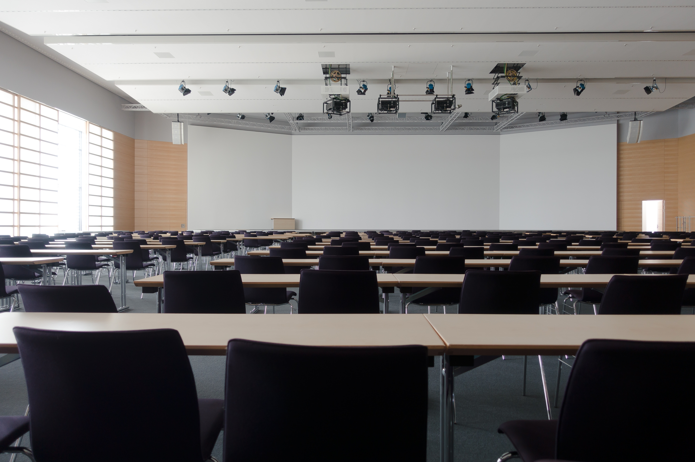

Our Plan



A major aspect of this non-profit is to network and connect our students to professors, researchers, and scientists who are involved with Data Science, Artificial Intelligence, and Machine Learning. Through this process, we hope that our students will find interest in researching and learning about the topics at the forefront of computer science. We hope to connect with researches in the New England area, including UConn. The end goal is to allow our students to gain publications in peer-reviewed journals, thereby applying their knowledge in computational biology, algorithmic-thinking, and mathematical logic into a real-world situation. Furthermore, we hope to inspire our students to volunteer in citizen-science projects such as those in AI and ML.
Our goal is to network to produce clubs and activities at schools across the New England region to help promote our goals. We hope that our non-profit can gain a strong foundation of interested students from our local chapters, so that we can hold virtual conferences with those experienced in Computer Science, such as software engineers at Microsoft, Amazon, and Google or researchers working for the betterment of society. All in all, these chapters will help spread our mission.